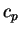
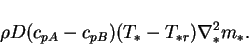
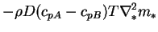
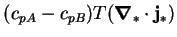

It does not make sense to treat the mixture specific heat capacity,
In the first case, constant  in (2.15), it is not possible to
use the species equation (2.5)
to simplify the energy
equation and an additional term appears on the right hand side of
(2.16):
|  | (2.18) |
In the second case, constant in (2.16), if one
attempts to write the energy equation (2.16) in the
form of a divergence (2.11), a spurious
source term appears:
|  | |||
|  | (2.19) |
Most importantly, however, the order of approximation involved in a constant mixture specific heat is inconsistent with the inclusion of interdiffusion. It should be clear by now--if not from the fundamental expression for the energy flux (2.12) then at least from the two possible errors exposed here--that the bulk advection of thermal energy and the interdiffusion of enthalpy are closely related. Indeed, they are an often convenient but somewhat artificial way of repartitioning the thermal energy transported by each of the species present when they move.
Another error was committed by myself (McBain 1995, 1997b) and Weaver and Viskanta (1991a): allowing the mixture specific heat to vary, but excluding the interdiffusion term. In the case of Weaver and Viskanta (1991a; discussed in §3.3.12), this may have caused their prediction of a spatial minimum in the gas-vapour phase temperature; an impossibility (as proven in §2.6.1) strongly suggestive of a spurious sink in the energy equation.
In conclusion, the interdiffusion term should be included in the energy equation if, and only if, the mixture specific heat is treated as a function of the vapour mass fraction. The question of when these should be included is taken up once the equations are nondimensionalized and some examples examined (ch. 6).